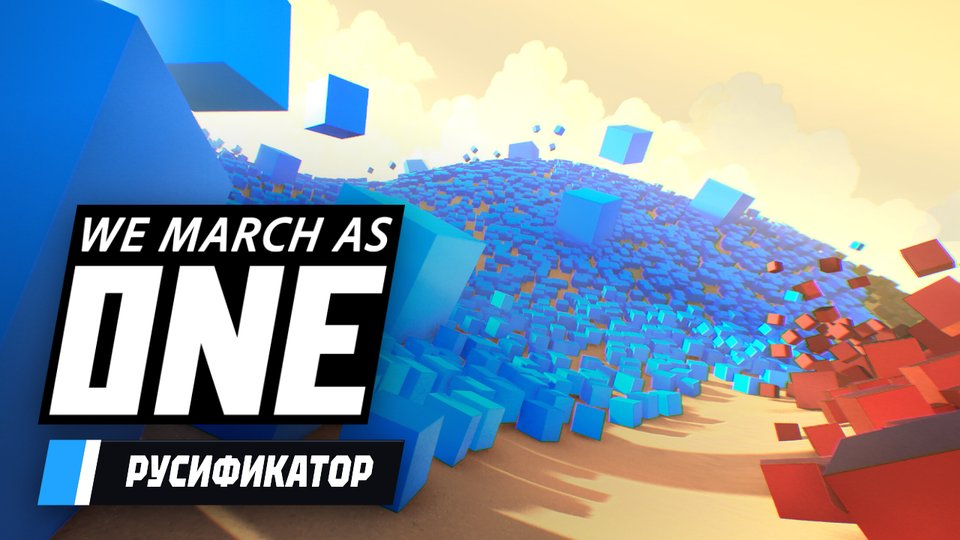

Сборка 2-в-1 · перевод + мод-меню
We March as One
Версия: v1.2
Патч: 26651298
Платформы: Windows, Steam Deck
Перевод кампании на 50 уровней, древа навыков и 30 достижений со всеми 5 игровыми шрифтами плюс сборка 2-в-1 с мод-меню и таблицей Cheat Engine.
Скачать сборку на Boosty
Постоянный пост игры на Boosty со всеми архивами и обновлениями под свежие патчи Steam.
Живые кадры из игры
Нажмите на любой кадр, чтобы рассмотреть детали в полном размере
Что входит в сборку
- 5 игровых шрифтов с кириллицей и экран 30 достижений
- Сборка 2-в-1 с удалением в один клик
- Мод-меню на 10 функций и таблица .CT v1.0
- Отдельная русская таблица для Cheat Engine 7.5+ в комплекте
- Проверено на сборке Steam: 26651298
Установка за минуту
- Скачайте архив сборки со страницы игры на Boosty и распакуйте в любую папку.
- Запустите установщик, проверьте путь к папке игры в Steam и нажмите «Установить».
- Запустите игру из библиотеки Steam. Возврат оригинальных файлов игры доступен в том же установщике. Для таблицы .CT откройте её в Cheat Engine 7.5+ и подключитесь к процессу запущенной игры.
- В режиме рабочего стола скачайте и распакуйте архив сборки.
- Запустите скрипт
install-steamdeck.sh- он скопирует файлы в папку игры и подскажет параметр запуска Proton при необходимости. - Вернитесь в игровой режим Steam Deck и запустите игру из библиотеки Steam.